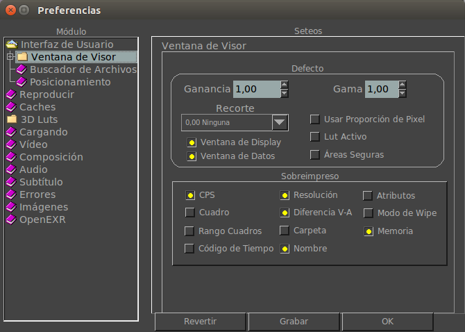

|  |
Aquí puede cambiar la ganancia y la gama por defecto cuando arranca el visor. Aquí puede setear la región de máscara cuando el visor arranca. Esta opción que está activada por defecto, muestra solo la ventana de display de imágenes como OpenEXR. Apagándola ella, en cambio, mostrará la ventana de datos. Para la mayoría de las imágenes ambas ventanas son iguales, pero OpenEXR hace la distincción entre ambas. Esta opción que está activada por defecto, muestra un cuadrado con lineas alrededor de la ventana de datos de la imagen cuando ésta difiere de la ventana de display. La ventana de datos de la imagen es usada principalmente con imágenes OpenEXR. Aquí podes activar el botón de la proporción del pixel (pixel ratio) cuando el visor comienza. Con esta opción, puede activar el botón de 3D Lut cuando el visor arranca. Aquí podes mostrar las áreas seguras (de titulo y acción) al comienzo del visor. Con estas opciones podes seleccionar que elemento del estado interno del visor se muestra en el HUD (Head Up Display). Si está activo, podes setear la posición en X y en Y donde la ventana de mrViewer se abre cada vez. Si no está activo, el posicionamiento es seteado por defecto por el manejador de ventanas del sistema operativo. |